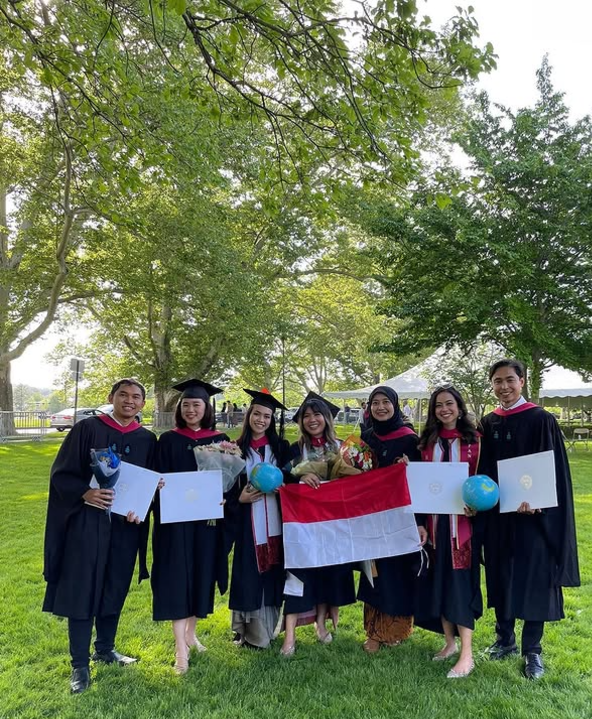
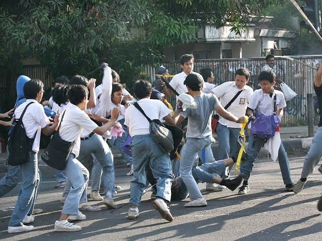

Galeri Foto


Dampak Positif
1. Peningkatan Kesejahteraan
Pendidikan membuka peluang untuk pekerjaan yang lebih baik, meningkatkan pendapatan, dan mengurangi kemiskinan.
2. Kesetaraan Sosial dan Gender
Meningkatkan akses pendidikan untuk semua, termasuk kelompok rentan dan perempuan, membantu mengurangi ketimpangan.
Dampak Negatif
1. Ketimpangan Akses Pendidikan
Tidak semua daerah memiliki akses yang sama ke pendidikan berkualitas, terutama wilayah terpencil atau konflik.
2. Beban Finansial pada Negara
Upaya menyediakan pendidikan gratis dan berkualitas memerlukan investasi besar dalam infrastruktur, guru, dan teknologi.
3. Standar Pendidikan Tidak Merata
Perbedaan kualitas guru, fasilitas, dan kurikulum di berbagai wilayah menyebabkan kesenjangan dalam hasil pendidikan.